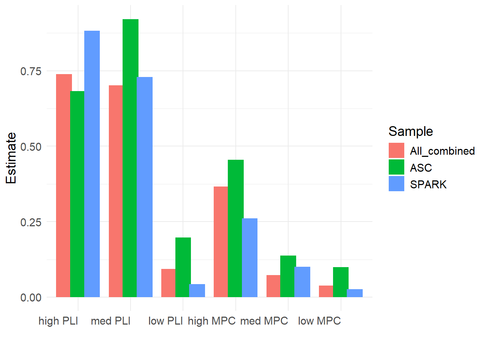
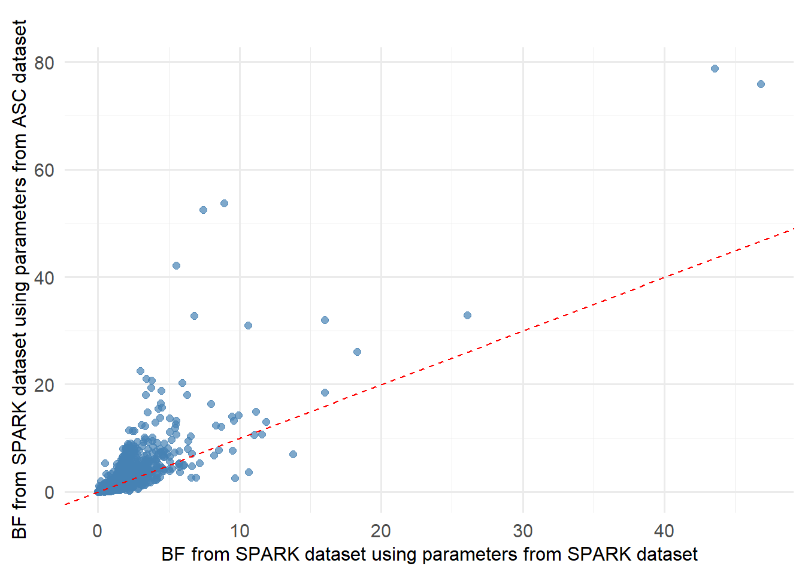
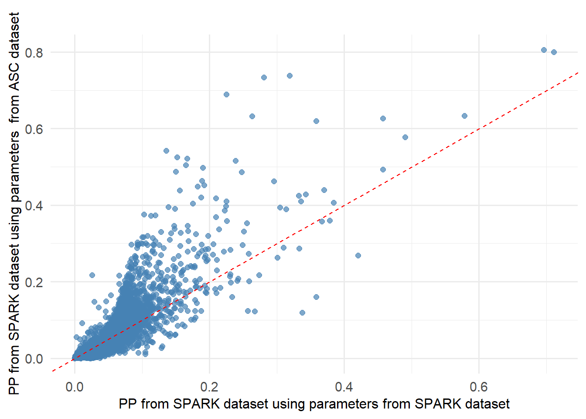
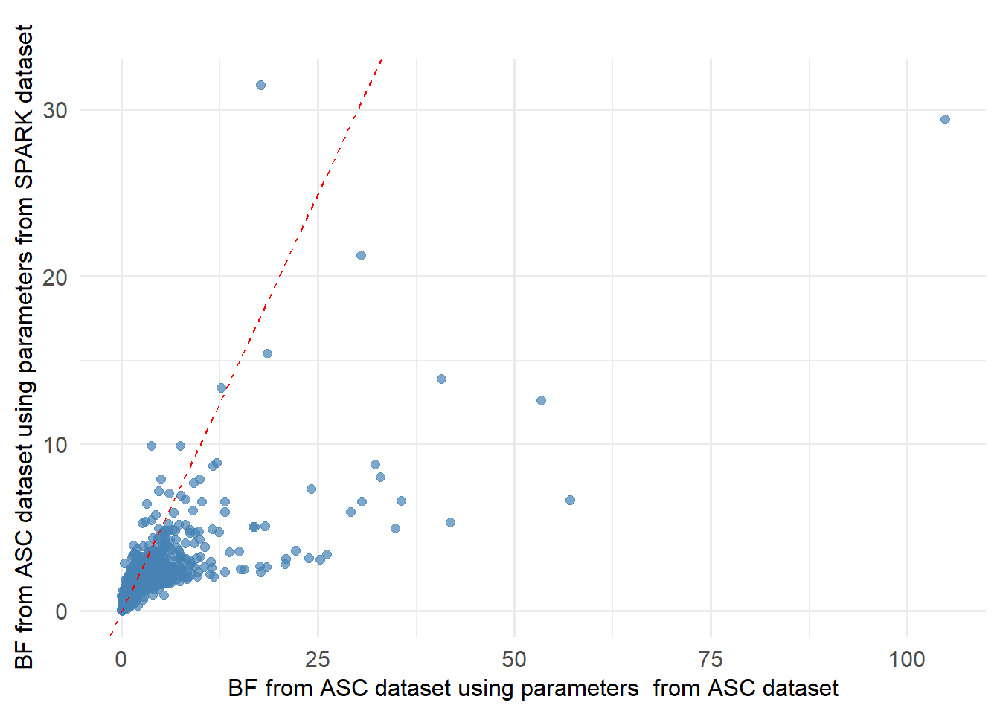
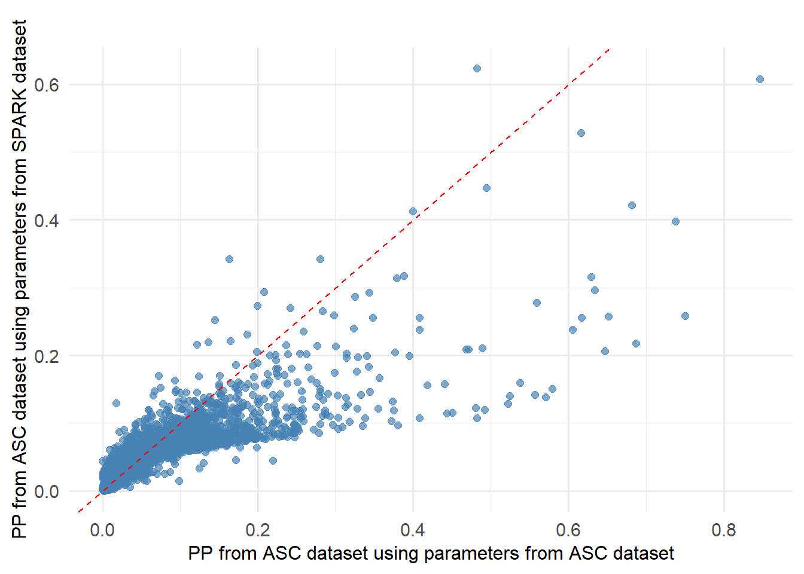
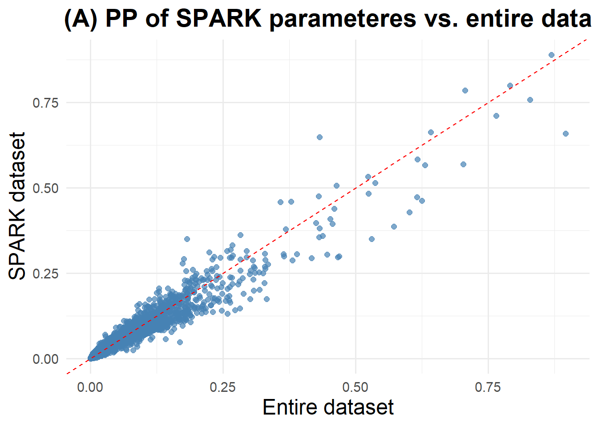
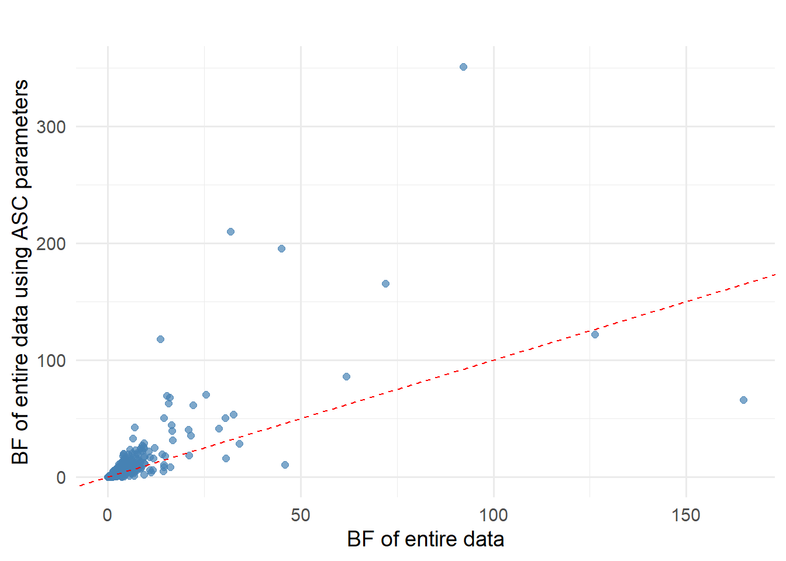
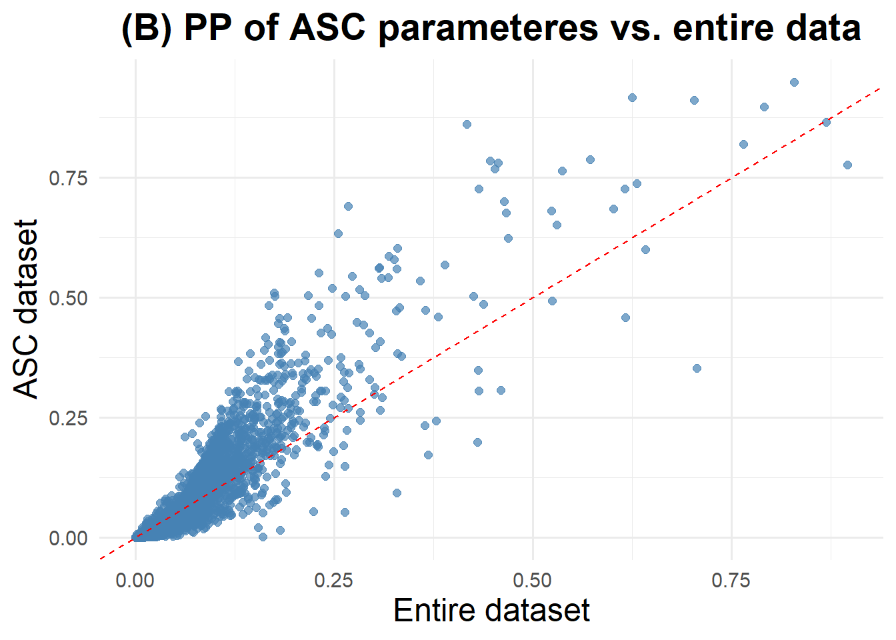

cross cohort validation
2025-07-07
########## use fixed parameter estimate to calculate BF, this is very useful because it doesn't need to re-run analysis to BF of every gene which takes a long time and large space to store that information
intergrand=function(aa, var.case, var.contr, bar.gamma, sig, N1, N0)
{
ff=dbinom(var.case, sum(var.case, var.contr), aa*N1/(aa*N1+N0))*dgamma(aa, bar.gamma*sig, sig)
return(ff)
}
# calculate the bayes factor of a single variant via integration
BF.var.inte=function(var.case, var.contr, bar.gamma, sig, N1, N0)
{
marglik0.CC <- dbinom(var.case, sum(var.case, var.contr), N1/(N1+N0)) # Under H0: gamma=1
marglik1.CC <- integrate(intergrand, var.case, var.contr, bar.gamma, sig, N1, N0, low=0, upper=100, stop.on.error=F)$value # Under H1: gamma~gamma(gamma.mean*sigma, sigma)
BF.var <- marglik1.CC/marglik0.CC
return(BF.var)
}
fixed.beta.func=function(new.data, N1, N0, gamma.mean, sigma, beta) # new.data has one column specifying its group index
{
#######################
beta.k=beta
full.info.genevar=list()
gene.list=new.data$Gene; unique.gene=unique(gene.list) # find the gene list
num.gene=length(unique.gene)
BF.gene=numeric()
########################
for (i in 1:num.gene)
{
# cat(i, "th gene of ", "\t", num.gene, "\t", "is running", "\n")
var.index.list=which(gene.list==unique.gene[i])
indi.gene=new.data[var.index.list,] # note var.index.list matches new.data
bb=1; var.BF=numeric()
if (length(var.index.list)>0) # calculate Bayes factor for variant (i,j)
for (j in 1:length(var.index.list))
{
if (new.data$group.index[var.index.list[j]]<=3) # note here bar.gamma is group specific, attention what bar.gamma goes to which group
var.BF[j]=BF.var.inte(new.data$No.case[var.index.list[j]], new.data$No.contr[var.index.list[j]], bar.gamma=6, sig=sigma, N1, N0)
if (new.data$group.index[var.index.list[j]]>3)
var.BF[j]=BF.var.inte(new.data$No.case[var.index.list[j]], new.data$No.contr[var.index.list[j]], bar.gamma=3, sig=sigma, N1, N0)
bb=bb*((1-beta.k[new.data$group.index[var.index.list[j]]])+beta.k[new.data$group.index[var.index.list[j]]]*var.BF[j])
}
full.info.genevar[[i]]=cbind(indi.gene, var.BF)
BF.gene[i]=bb
}
return(result=list(BayesFactor=data.frame(Gene=unique.gene, BF=BF.gene), full.info=full.info.genevar))
}parameter estimates across different samples
The parameter estimates are from Laura who run MIRAGE on ASC, SPARK and combined cohort.
parameter_estimate=data.frame(estimate=c(0.738664291977854,
0.701330924907413,
0.0931459290392402,
0.366135847737628,
0.0731974976958973,
0.0386167362363095,
0.682825870568066,
0.921371779633259,
0.197311277809648,
0.454608112873237,
0.138217940881292,
0.0997160018265602,
0.882428410065275,
0.729147736110148,
0.0425038817075758,
0.260898625054489,
0.100050160878319,
0.0267419820227973
),
parameters=rep(paste0("eta", seq(1,6)),3),
samples=rep(c("All_combined", "ASC", "SPARK"), each=6))
parameter_estimate <- parameter_estimate %>%
mutate(parameters = recode(parameters,
eta1 = "high PLI",
eta2 = "med PLI",
eta3 = "low PLI",
eta4 = "high MPC",
eta5 = "med MPC",
eta6 = "low MPC"
))
parameter_estimate$parameters <- factor(parameter_estimate$parameters,
levels = c("high PLI", "med PLI", "low PLI", "high MPC", "med MPC", "low MPC")
)
# Plot with updated labels
ggplot(parameter_estimate, aes(x = parameters, y = estimate, fill = samples)) +
geom_bar(stat = "identity", position = position_dodge(width = 0.8)) +
labs(x = "", y = "Estimate", fill = "Sample") +
theme_minimal() +
theme(
text = element_text(size = 14),
axis.text.x = element_text(angle = 0, hjust = 1)
)
apply ASC parameters to SPARK data
beta=c(0.682825870568066,
0.921371779633259,
0.197311277809648,
0.454608112873237,
0.138217940881292,
0.0997160018265602) # ASC parameter estimate
new.data=read.table("C:\\Users\\hans\\OneDrive - Marquette University\\RareVariant\\100323_delta_0.05\\SPARK_combined\\mirage_input.txt", header=T)
# SPARK:7008, ASC: 7570
result=fixed.beta.func(new.data, N1=7008, N0=7008, gamma.mean=c(rep(6,3),rep(3,3)), sigma=2,beta=beta) # use fixed beta to calculate Bayes factors
#write.csv(result$BayesFactor, file="C:\\Users\\hans\\OneDrive - Marquette University\\RareVariant\\SPARK_BF_using_ASC_parameters.csv")delta=0.05
SPARK_BF=read.table("C:\\Users\\hans\\OneDrive - Marquette University\\RareVariant\\100323_delta_0.05\\SPARK_combined\\mirage_result.txt", header=T)
SPARK_BF_ASC_parameters=read.csv("C:\\Users\\hans\\OneDrive - Marquette University\\RareVariant\\SPARK_BF_using_ASC_parameters.csv", header=T)
SPARK_BF_ASC_parameters=SPARK_BF_ASC_parameters %>% mutate(post.prob=BF*delta/(delta*BF+1-delta))merged_df <- merge(SPARK_BF, SPARK_BF_ASC_parameters, by = "Gene", suffixes = c("_SPARK", "SPARK_with_ASC_parameters"))
library(ggplot2)
ggplot(merged_df, aes(x = BF_SPARK, y = BFSPARK_with_ASC_parameters)) +
geom_point(color = "steelblue", size = 2, alpha = 0.7) +
geom_abline(intercept = 0, slope = 1, linetype = "dashed", color = "red") +
labs(
x = "BF from SPARK dataset using parameters from SPARK dataset",
y = "BF from SPARK dataset using parameters from ASC dataset",
title = ""
) +
theme_minimal(base_size = 14)+
theme(
axis.title.x = element_text(size = 12),
axis.title.y = element_text(size = 12)
)
merged_df <- merge(SPARK_BF, SPARK_BF_ASC_parameters, by = "Gene", suffixes = c("_SPARK", "SPARK_with_ASC_parameters"))
library(ggplot2)
ggplot(merged_df, aes(x = post.prob_SPARK, y = post.probSPARK_with_ASC_parameters)) +
geom_point(color = "steelblue", size = 2, alpha = 0.7) +
geom_abline(intercept = 0, slope = 1, linetype = "dashed", color = "red") +
labs(
x = "PP from SPARK dataset using parameters from SPARK dataset",
y = "PP from SPARK dataset using parameters from ASC dataset",
title = ""
) +
theme_minimal(base_size = 14)+
theme(
axis.title.x = element_text(size = 12),
axis.title.y = element_text(size = 12)
)
apply SPARK parameters to ASC data
beta=c(0.882428410065275,
0.729147736110148,
0.0425038817075758,
0.260898625054489,
0.100050160878319,
0.0267419820227973
) # SPARK parameter estimate
new.data=read.table("C:\\Users\\hans\\OneDrive - Marquette University\\RareVariant\\100323_delta_0.05\\ASC_combined\\mirage_input.txt", header=T)
# SPARK:7008, ASC: 7570
result=fixed.beta.func(new.data, N1=7570, N0=7570, gamma.mean=c(rep(6,3),rep(3,3)), sigma=2,beta=beta) # use fixed beta to calculate Bayes factors
#write.csv(result$BayesFactor, file="C:\\Users\\hans\\OneDrive - Marquette University\\RareVariant\\ASC_BF_using_SPARK_parameters.csv")ASC_BF=read.table("C:\\Users\\hans\\OneDrive - Marquette University\\RareVariant\\100323_delta_0.05\\ASC_combined\\mirage_result.txt", header=T)
ASC_BF_SPARK_parameters=read.csv("C:\\Users\\hans\\OneDrive - Marquette University\\RareVariant\\ASC_BF_using_SPARK_parameters.csv", header=T)
ASC_BF_SPARK_parameters=ASC_BF_SPARK_parameters %>% mutate(post.prob=BF*delta/(delta*BF+1-delta))merged_df <- merge(ASC_BF, ASC_BF_SPARK_parameters, by = "Gene", suffixes = c("_ASC", "_ASC_with_SPARK_parameters"))
library(ggplot2)
ggplot(merged_df, aes(x = BF_ASC, y = BF_ASC_with_SPARK_parameters)) +
geom_point(color = "steelblue", size = 2, alpha = 0.7) +
geom_abline(intercept = 0, slope = 1, linetype = "dashed", color = "red") +
labs(
x = "BF from ASC dataset using parameters from ASC dataset",
y = "BF from ASC dataset using parameters from SPARK dataset",
title = ""
) +
theme_minimal(base_size = 14)+
theme(
axis.title.x = element_text(size = 12),
axis.title.y = element_text(size = 12)
)
merged_df <- merge(ASC_BF, ASC_BF_SPARK_parameters, by = "Gene", suffixes = c("_ASC", "_ASC_with_SPARK_parameters"))
library(ggplot2)
ggplot(merged_df, aes(x = post.prob_ASC, y = post.prob_ASC_with_SPARK_parameters)) +
geom_point(color = "steelblue", size = 2, alpha = 0.7) +
geom_abline(intercept = 0, slope = 1, linetype = "dashed", color = "red") +
labs(
x = "PP from ASC dataset using parameters from ASC dataset",
y = "PP from ASC dataset using parameters from SPARK dataset",
title = ""
) +
theme_minimal(base_size = 14)+
theme(
axis.title.x = element_text(size = 12),
axis.title.y = element_text(size = 12)
)
apply SPARK parameters to entire data
beta=c(0.882428410065275,
0.729147736110148,
0.0425038817075758,
0.260898625054489,
0.100050160878319,
0.0267419820227973
) # SPARK parameter estimate
new.data=read.table("C:\\Users\\hans\\OneDrive - Marquette University\\RareVariant\\100323_delta_0.05\\ALL_combined\\mirage_input.txt", header=T)
# SPARK:7008, ASC: 7570
result=fixed.beta.func(new.data, N1=14578, N0=14578, gamma.mean=c(rep(6,3),rep(3,3)), sigma=2,beta=beta) # use fixed beta to calculate Bayes factors
#write.csv(result$BayesFactor, file="C:\\Users\\hans\\OneDrive - Marquette University\\RareVariant\\entire_data_BF_using_SPARK_parameters.csv")delta=0.05
entire_BF=read.table("C:\\Users\\hans\\OneDrive - Marquette University\\RareVariant\\100323_delta_0.05\\ALL_combined\\mirage_result.txt", header=T)
entire_BF_SPARK_parameters=read.csv("C:\\Users\\hans\\OneDrive - Marquette University\\RareVariant\\entire_data_BF_using_SPARK_parameters.csv", header=T)
entire_BF_SPARK_parameters=entire_BF_SPARK_parameters %>% mutate(post.prob=BF*delta/(delta*BF+1-delta))merged_df <- merge(entire_BF, entire_BF_SPARK_parameters, by = "Gene", suffixes = c("_entire", "_entire_with_SPARK_parameters"))
library(ggplot2)
ggplot(merged_df, aes(x = BF_entire, y = BF_entire_with_SPARK_parameters)) +
geom_point(color = "steelblue", size = 2, alpha = 0.7) +
geom_abline(intercept = 0, slope = 1, linetype = "dashed", color = "red") +
labs(
x = "BF from entire dataset using parameters from entire dataset",
y = "BF from entire dataset using parameters from SPARK dataset",
title = ""
) +
theme_minimal(base_size = 14)+
theme(
axis.title.x = element_text(size = 12),
axis.title.y = element_text(size = 12)
)
merged_df <- merge(entire_BF, entire_BF_SPARK_parameters, by = "Gene", suffixes = c("_entire", "_entire_with_SPARK_parameters"))
library(ggplot2)
ggplot(merged_df, aes(x = post.prob_entire, y = post.prob_entire_with_SPARK_parameters)) +
geom_point(color = "steelblue", size = 2, alpha = 0.7) +
geom_abline(intercept = 0, slope = 1, linetype = "dashed", color = "red") +
labs(
x = "Entire dataset",
y = "SPARK dataset",
title = "(A) PP of SPARK parameteres vs. entire data"
) +
theme_minimal(base_size = 14)+
theme(
axis.title.x = element_text(size = 18),
axis.title.y = element_text(size = 18),
plot.title = element_text(size = 21, hjust = 0.5, face = "bold") # Center + enlarge + bold
)
apply ASC parameters to entire data
beta=c(0.682825870568066,
0.921371779633259,
0.197311277809648,
0.454608112873237,
0.138217940881292,
0.0997160018265602) # ASC parameter estimate
new.data=read.table("C:\\Users\\hans\\OneDrive - Marquette University\\RareVariant\\100323_delta_0.05\\ALL_combined\\mirage_input.txt", header=T)
# SPARK:7008, ASC: 7570
result=fixed.beta.func(new.data, N1=14578, N0=14578, gamma.mean=c(rep(6,3),rep(3,3)), sigma=2,beta=beta) # use fixed beta to calculate Bayes factors
#write.csv(result$BayesFactor, file="C:\\Users\\hans\\OneDrive - Marquette University\\RareVariant\\entire_data_BF_using_ASC_parameters.csv")entire_BF=read.table("C:\\Users\\hans\\OneDrive - Marquette University\\RareVariant\\100323_delta_0.05\\ALL_combined\\mirage_result.txt", header=T)
entire_BF_ASC_parameters=read.csv("C:\\Users\\hans\\OneDrive - Marquette University\\RareVariant\\entire_data_BF_using_ASC_parameters.csv", header=T)
entire_BF_ASC_parameters=entire_BF_ASC_parameters %>% mutate(post.prob=BF*delta/(delta*BF+1-delta))merged_df <- merge(entire_BF, entire_BF_ASC_parameters, by = "Gene", suffixes = c("_entire", "_entire_with_ASC_parameters"))
library(ggplot2)
ggplot(merged_df, aes(x = BF_entire, y = BF_entire_with_ASC_parameters)) +
geom_point(color = "steelblue", size = 2, alpha = 0.7) +
geom_abline(intercept = 0, slope = 1, linetype = "dashed", color = "red") +
labs(
x = "BF from entire dataset using parameters from entire dataset",
y = "BF from entire dataset using parameters from ASC dataset",
title = ""
) +
theme_minimal(base_size = 14)+
theme(
axis.title.x = element_text(size = 18),
axis.title.y = element_text(size = 18),
plot.title = element_text(size = 22, hjust = 0.5, face = "bold") # Center + enlarge + bold
)
merged_df <- merge(entire_BF, entire_BF_ASC_parameters, by = "Gene", suffixes = c("_entire", "_entire_with_ASC_parameters"))
library(ggplot2)
ggplot(merged_df, aes(x = post.prob_entire, y = post.prob_entire_with_ASC_parameters)) +
geom_point(color = "steelblue", size = 2, alpha = 0.7) +
geom_abline(intercept = 0, slope = 1, linetype = "dashed", color = "red") +
labs(
x = "Entire dataset",
y = "ASC dataset",
title = "(B) PP of ASC parameteres vs. entire data"
) +
theme_minimal(base_size = 14)+
theme(
axis.title.x = element_text(size = 18),
axis.title.y = element_text(size = 18),
plot.title = element_text(size = 21, hjust = 0.5, face = "bold") # Center + enlarge + bold
)
This R Markdown site was created with workflowr